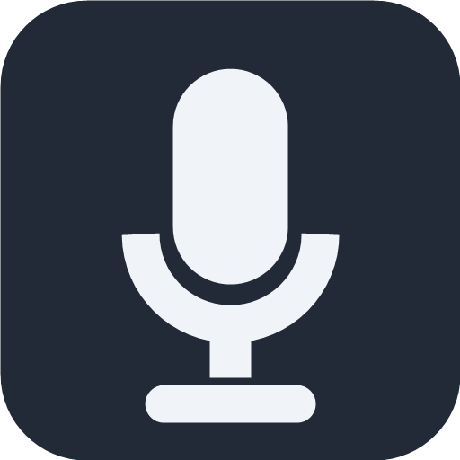
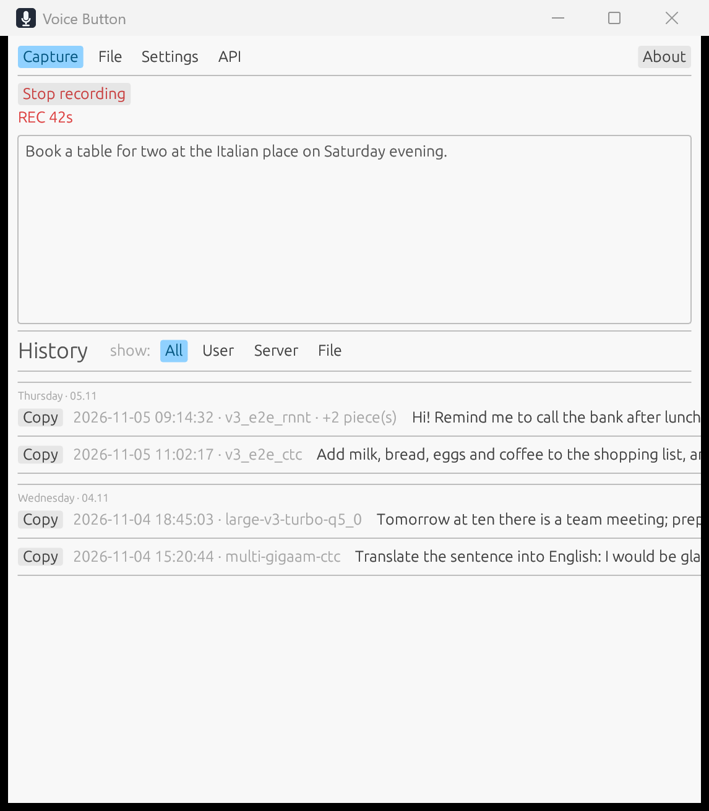
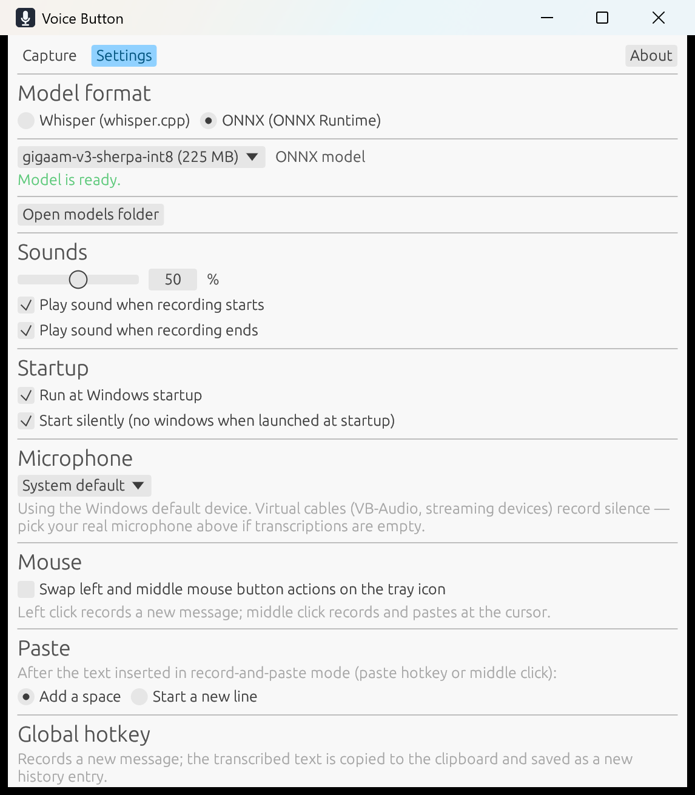

Из трея или из окна
Левый клик — новая запись, средний — запись и вставка в курсор; действия можно поменять местами. Значок показывает запись и обработку цветом.

VOICE BUTTON GitHubГолос становится текстом прямо на вашем компьютере. Нажмите микрофон в трее, говорите, заберите готовый текст из буфера обмена.
Бесплатно · MIT · без аккаунта · без облака
«Идея появилась — и вот она уже записана. Без переключения между окнами и без отправки голоса на сервер.»
CAPTURE
Транскрипция идёт параллельно с записью. Длинный текст переносится по строкам, а после остановки обрабатывается только последний фрагмент.

Левый клик — новая запись, средний — запись и вставка в курсор; действия можно поменять местами. Значок показывает запись и обработку цветом.
Выбирайте популярные мультиязычные Whisper или русские GigaAM CTC/RNN-T. Модель скачивается только по вашему действию.
Раскрывайте и копируйте прошлые результаты. Большой список читается и отрисовывается лениво.
Аудио не покидает компьютер во время распознавания. Нет учётной записи, подписки и облачной обработки.

CONTROL WITHOUT FRICTION
Без кнопки Save. Микрофон, действия кнопок мыши, глобальные хоткеи, звуки, громкость, язык и автозапуск меняются на месте. Если модель ещё скачивается, её выбор применится только когда она будет готова.
GET VOICE BUTTON @@VERSION@@
РЕКОМЕНДУЕТСЯ
Установка для всех пользователей, ярлык в меню «Пуск» и корректное удаление через Windows.
Скачать SetupБЕЗ УСТАНОВКИ
Распакуйте и запустите voice-button.exe. Держите voice-button-ui.exe рядом — оба файла входят в архив.
Скачать ZIPИсходный код — MIT License. В сборку входят ONNX Runtime (MIT), sherpa-onnx (Apache-2.0) и whisper.cpp (MIT); полные тексты лицензий лежат в THIRD-PARTY.txt рядом с исполняемыми файлами. Модели не входят в установщик: приложение лишь предлагает ссылки для их скачивания.